Shipwreck Isle: 54 cards
← Back to the game · Paintings painted by Am015-dev.
Beasts 16
Apainting soon
AlligatorStrength 6 · weapon −2 · 3 food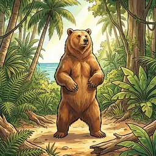
BearStrength 6 · weapon −1 · 5 food + 2 furBpainting soon
BirdsStrength 1 · weapon −0 · 2 food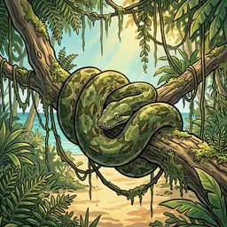
BoaStrength 2 · weapon −2 · 2 fooddraw a discovery token after the fight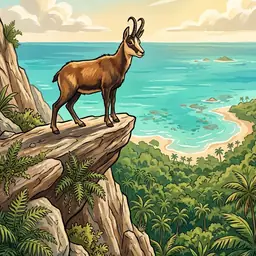
ChamoisStrength 5 · weapon −1 · 3 food + 2 fur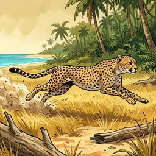
CheetahStrength 4 · weapon −1 · 2 food + 1 fur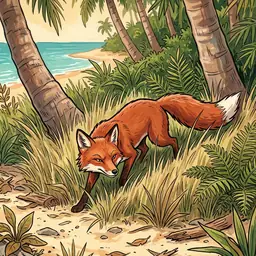
FoxStrength 2 · weapon −0 · 2 food + 1 fur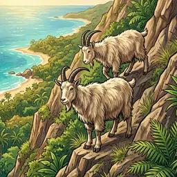
GoatsStrength 4 · weapon −1 · 3 food + 1 fur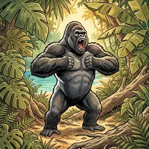
GorillaStrength 6 · weapon −3 · 5 food + 2 furdraw a discovery token after the fight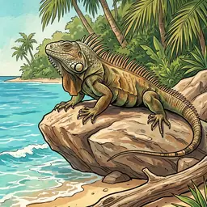
IguanaStrength 4 · weapon −1 · 3 food + 1 fur1 extra wound whatever your weapon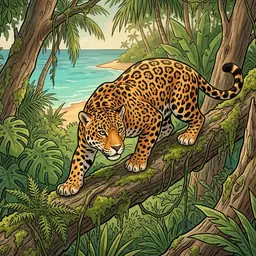
JaguarStrength 5 · weapon −0 · 4 food + 1 fur2 more wounds unless you have Medicine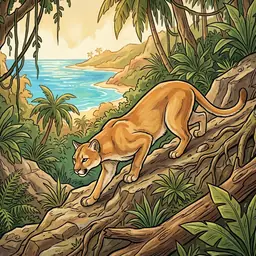
PumaStrength 5 · weapon −0 · 2 food + 1 fur2 more wounds unless you have Medicine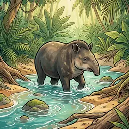
TapirStrength 3 · weapon −1 · 2 food + 1 fur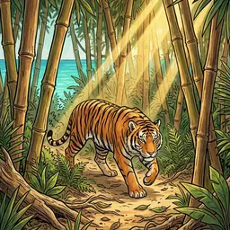
TigerStrength 6 · weapon −2 · 5 food + 2 fur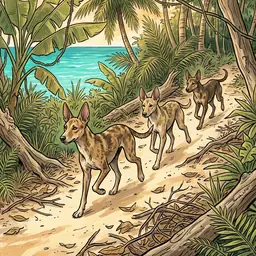
Wild DogStrength 3 · weapon −0 · 2 food + 1 fur2 more wounds unless you have Medicine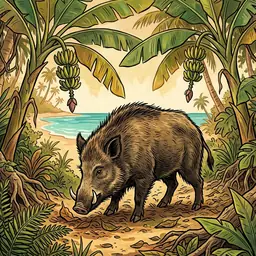
Wild PigStrength 3 · weapon −1 · 3 food + 1 furInventions 30
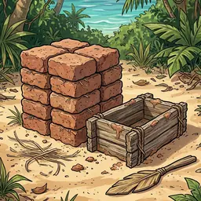
Bricksstarting invention · needs hills tilePalisade +1.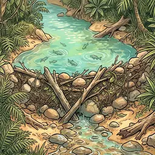
Damstarting invention · needs river tile, 1 woodGain 2 non-perishable food.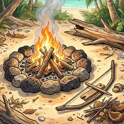
Firestarting invention · needs mountains tilePalisade +1.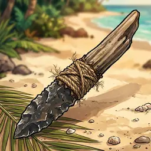
Knifestarting invention · needs mountains tileWeapon +1.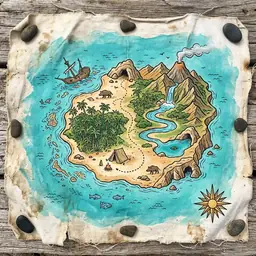
Mapstarting invention · needs river tileAn extra pawn for explore actions, every round.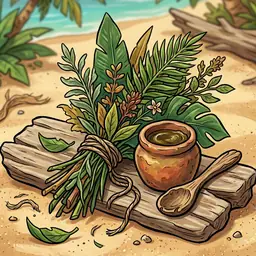
Medicinestarting invention · needs plains tileMany injuries and illnesses hurt less.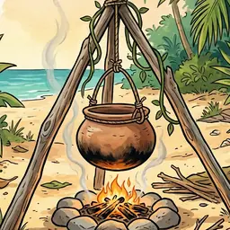
Potstarting invention · needs hills tileOnce each night: 1 food heals 1 wound.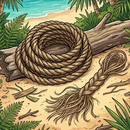
Ropestarting invention · needs plains tileNeeded for other inventions.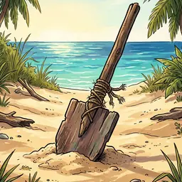
Shovelstarting invention · needs beach tileNeeded for other inventions and many threats.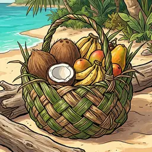
Basketinvention · needs plains tileOne successful gather action a round gives 1 more resource.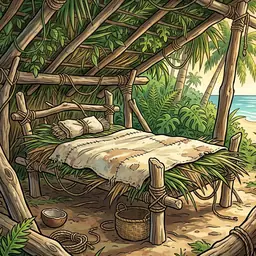
Bedinvention · needs plains tileResting heals 2 wounds and gives 1 determination.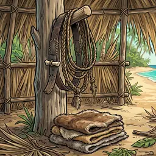
Beltsinvention · needs Knife, 1 furAn extra pawn for gather actions, every round.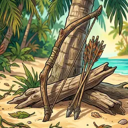
Bowinvention · needs Rope, Knife, 1 woodWeapon +3.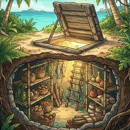
Cellarinvention · needs ShovelFood no longer spoils at night.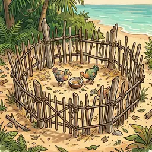
Corralinvention · needs Rope, 1 woodA bird source next to camp is used up, but the camp tile makes 1 more food.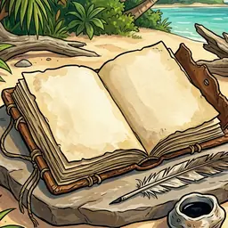
Diaryinvention · needs 1 fur+1 determination in each morale phase.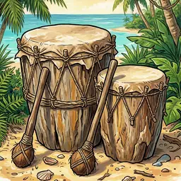
Drumsinvention · needs hills tile, 1 fur+2 determination in each morale phase.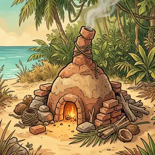
Furnaceinvention · needs BricksIgnore 1 snow cloud in each weather phase.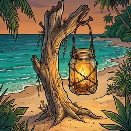
Lanterninvention · needs hills tile, FireAn extra pawn for build actions, every round.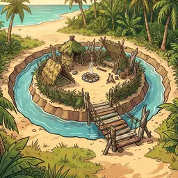
Moatinvention · needs Shovel, 1 woodPalisade +2.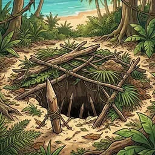
Pitinvention · needs Shovel, 1 woodIn production roll the build wound die: on a wound face gain 2 food.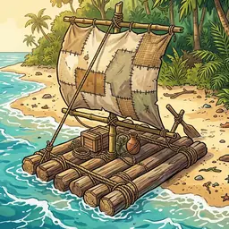
Raftinvention · needs Rope, 2 woodAn extra pawn for gather or explore actions, every round.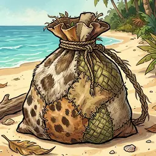
Sackinvention · needs 1 furOne successful gather action a round gives 1 more resource.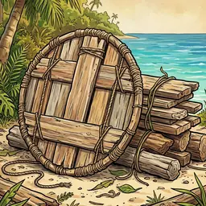
Shieldinvention · needs Rope, 1 woodAn extra pawn for hunting, every round.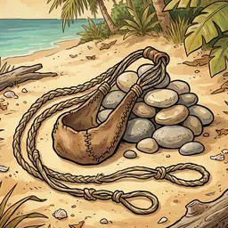
Slinginvention · needs 1 fur or 1 woodWeapon +2.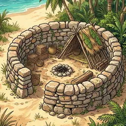
Stone Wallinvention · needs BricksPalisade +2.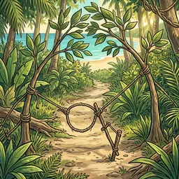
Snareown invention of the Carpenter · needs RopeThe camp tile makes 1 more food.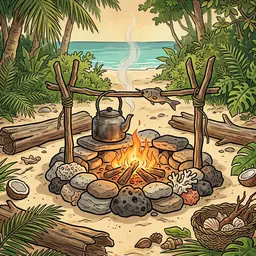
Fireplaceown invention of the Cook · needs FireOnce each night: 1 food heals 2 wounds.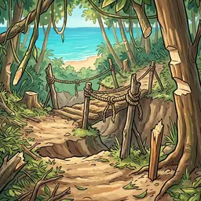
Shortcutown invention of the Explorer · needs MapMark a tile next to camp: production gives 1 resource from it.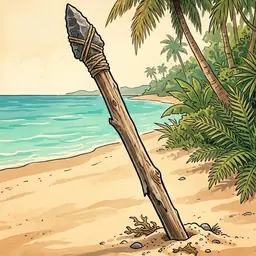
Spearown invention of the Soldier · needs Knife, 1 woodWeapon +3.Items 8
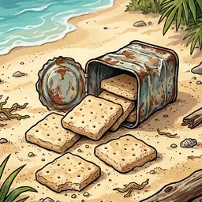
Ship’s Biscuitsstarting item · 2 usesGain 1 non-perishable food.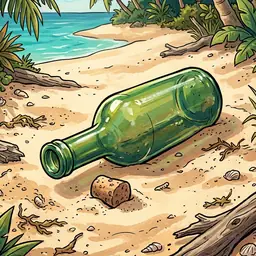
Empty Bottlestarting item · 2 usesWeapon +1.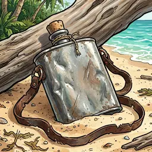
Flask of Rumstarting item · 2 usesAt night, heal 1 wound.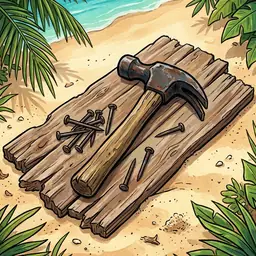
Hammer and Nailsstarting item · 2 usesAn extra pawn for one build action.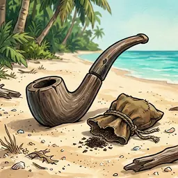
Pipe and Tobaccostarting item · 2 usesThe user gains 2 determination.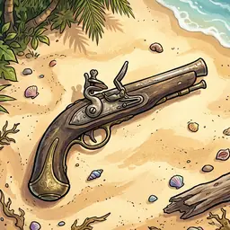
Flintlock Pistolstarting item · 2 uses+3 weapon for one fight.Spainting soon
Storm Glassstarting item · 2 usesRoll this round’s weather dice before planning (they still apply in the weather phase).Ppainting soon
Prayer Bookstarting item · 2 usesWhen arranging the camp: 3 determination and heal 1 wound, instead of 2 determination.